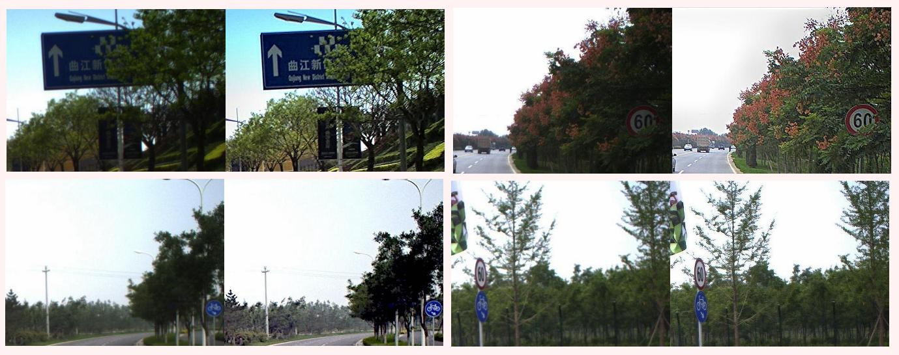
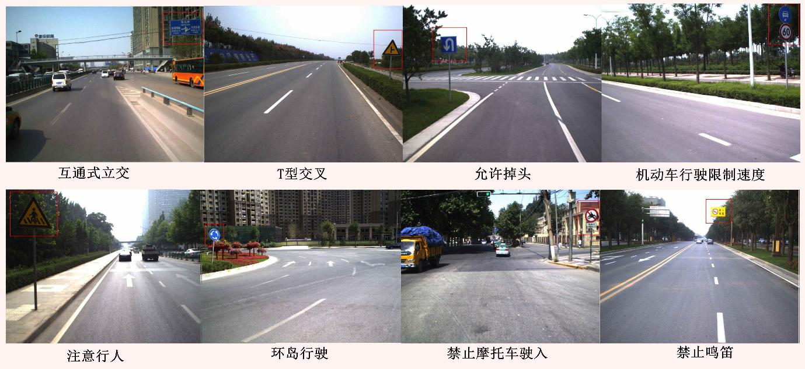
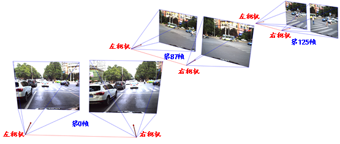
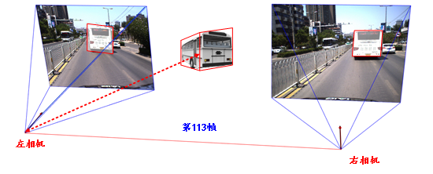

简介
模糊图像数据库包含交通场景图像增强数据库、交通标志图像识别数据库、三维场景重建数据库和环境深度感知数据库，其数据集由2015年中国模糊图像处理竞赛中的比赛数据集扩充而得。
无人驾驶智能车在行驶过程中，因运动以及其他因素可导致车载相机图像的质量劣化，不利于道路和行人的识别，因此实时图像增强算法的研究有着极大的意义。交通场景图像增强数据库提供了劣化的车载相机图像序列及其增强后的对比图像序列。车载相机图像序列数据采自车辆在实际行驶过程中因运动以及其他因素而导致的质量劣化图像序列，增强后的图像为运用图像增强方法与技术对车载相机图像序列数据进行处理后的图像。图一选取了数据库中增强前和增强后的图像，可以看到经过增强处理的图像，整体和细节方面的视觉效果得到了明显提升。

图一 交通场景图像增强前/后对比图
交通标志中包含许多重要的交通信息，如驾驶前方道路状况的改变、速度限制、驾驶行为限制等，适时提供这些信息给驾驶员有利于驾驶员及时反应，保证驾驶安全乃至避免交通事故的发生，因此交通标志识别的应用性研究具有重要的意义。交通标志图像识别数据库分为警告标识、禁令标识、指示标识、指路标识、旅游区标识、道路施工安全标识和辅助标识7个大类，共计72种交通标识，提供了车辆在实际行驶过程中因车辆运动以及其他因素而导致的车载相机劣化图像序列，以及其中出现的交通标志的检测定位与内容识别结果。

图二 交通标志图像识别示例
在双目立体视觉环境感知方面，三维场景重建数据库提供了使用静止车载双目相机所采集的图像序列数据，以及场景的三维重建结果；环境深度感知数据库提供了使用运动车载双目立体相机所采集的图像序列数据，以及车辆与指定目标间的实际距离。

图三 三维场景重建
本数据集均采自车辆行驶过程中利用车载立体视觉系统在真实道路交通环境中采集的实际交通场景图像序列，如图三所示。三维场景重建数据库中的三维场景重建需要将基于立体视觉所得每帧的深度信息统一到一个三维坐标系下，其中对于左右相机每帧的位姿估计精度很大程度上决定了三维场景重建的精度，所以三维场景重建采用图三所示左右相机每帧的三维位置估计精度作为评价指标。环境深度感知数据库中的环境深度感知则考察如图四所示三维空间中指定目标物体到左相机的每帧动态距离估计精度。

图四 环境深度感知
如何获取本库
模糊图像数据库仅供学术和研究使用，通过如下操作可以免费获得我们的数据库。
1. 向管理员email一份扫描版的数据库申请书。申请书应使用申请人所属机构的正式信纸（或写明所属机构的完整名称、地址、联系信息）；应盖有所属机构的印章（或申请人的手写签名）。如果你在中国大陆，请用中文申请。
2. 下载协议书，认真填写并将扫描版email给管理员。注意协议注明必须是全职工作人员签名（也就是说，学生签名无效）。如果你在中国大陆，请用中文签名。
3. 我们在收到完整的上面两份扫描文件后，将审核你的申请。审核通过后，将通过email方式告知你主站点下载帐户及密码信息。
4. 本数据库提供中国主下载站点（位于西安交通大学）。
5. 凡是用到数据库的文献，必须注明所引用的数据库为西安交通大学人工智能与机器人研究所模糊图像数据库（IAIR）。
若有关于本数据库的其他问题，请联系管理员，管理员邮箱地址：xdhan147@stu.xjtu.edu.cn。